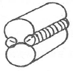
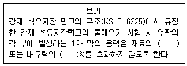

누설비파괴검사기사 (2014-09-20 기출문제)
1과목: 비파괴검사 개론
1. 다음 중 30mm 압연 강판에 존재하는 라미네이션을 검사 하고자 할 때 가장 적절한 비파괴검사법은?
- 자동 방사선투과검사
- 자동 와전류탐상검사
- 자동 초음파탐상검사
- 질량분석 누설검사
(정답률: 알수없음)

2. 와전류탐상시험이 가능하지 않은 대상물은?
- 고무 막대
- 강철 막대
- 구리 막대
- 알루미늄 막대
(정답률: 알수없음)
3. 다음 중 비파괴검사법에 대한 일반적인 설명으로 틀린 것은?
- 초음파탐상시험은 방사선투과시험보다 두꺼운 강재를 검사할 수 있다.
- 방사선투과시험은 결함의 깊이와 형태를 정확히 알 수 있다.
- 초음파탐상시험은 원리적으로 펄스반사법이 많이 이용되고 있다.
- 표면결함이 검출은 강자성체의 경우 자분탐상시험이 효과적이다.
(정답률: 알수없음)
4. 자분탐상검사에 영향을 미치는 자분의 성질로 가장 거리가 먼 것은?
- 자분의 색조와 휘도
- 자분의 전기적 성질
- 자분의 입도
- 자분의 비중
(정답률: 알수없음)
5. 다음 중 침투탐상시험이 적합한지를 선택하는 조건과 거리가 먼 것은?
- 시험체의 재질
- 시험체의 형상
- 시험체의 표면 상태
- 시험체의 제작 공차
(정답률: 알수없음)
6. 판재를 펀치와 다이 사이에서 압축하여 성형하는 방법은?
- 압출 가공
- 프레스 가공
- 인발 가공
- 압연 가공
(정답률: 알수없음)
7. 강의 시험에서 죠미니 선단 담금질(Jominy end quenching test) 시험의 목적은?
- 경화능시험
- 초단파시험
- 자기이력시험
- 전자유도시험
(정답률: 알수없음)
8. 오스테나이트 스테인리스강의 입계부식에 관한 설명으로 틀린 것은?
- 결정입계에 탄화물 석출에 의해 부식이 발생된다.
- 결정입계에 질화물 석출에 의해 부식이 발생된다.
- 티타늄을 첨가하면 입계에 부식이 촉진된다.
- 결정입계에 크롬 농도가 감소되어 부식이 발생한다.
(정답률: 알수없음)
9. 순철의 변태가 아닌 것은?
- A4 변태
- A3 변태
- A2 변태
- A1 변태
(정답률: 알수없음)
10. 강중에 비금속 개재물의 영향을 설명한 것으로 틀린 것은?
- 재료 내부에 점재하여 인성을 해친다.
- 강에 백정이나 헤어 크랙의 원인이 된다.
- 철의 규산염 등은 적열취성의 원인이 된다.
- 열처리 하였을 때 개재물로부터 균열을 일으키기 쉽다.
(정답률: 알수없음)
11. 금속재료에서 탄소의 함량이 가장 적은 것에서 많은 순서로 옳은 것은?
- 전해철 < 연강 < 주철 < 경강
- 전해철 < 연강 < 경강 < 주철
- 연강 < 전해철 < 경강 < 주철
- 연강 < 전해철 < 주철 < 경강
(정답률: 알수없음)
12. 금속 분말의 유동성에 영향을 미치는 인자가 아닌 것은?
- 분말의 수분 함량
- 분말의 입도 및 형상
- 분말의 자기적 성질
- 분말의 용기 사이의 마찰 계수
(정답률: 알수없음)
13. 담금질(quenching)후의 마텐자이트의 결정구조는?
- 체심정방격자
- 면심정방격자
- 면심입방격자
- 조일육방격자
(정답률: 알수없음)
14. 주석청동 주물은 상당한 강도가 있고, 마모·수압 및 부식에 견디며, 외관도 미려하므로 널리 사용되나 용탕의 유동성을 좋게 하기 위하여 첨가하는 것은?
- S
- Ni
- Zn
- Pb
(정답률: 알수없음)
15. 6:4 황동에 Sn을 넣은 것으로 복수기판, 용접봉 등에 이용되는 것은?
- Naval brass
- Hard brass
- Albrac bronze
- Admiralty metal
(정답률: 알수없음)
16. 알루미늄, 마그네슘, 구리 및 구리합금, 스테인리스강의 절단에 주로 이용되는 절단법은?
- 산소 아크 절단
- 탄소 아크 절단
- 아크 에어 가우징
- 티그 절단
(정답률: 알수없음)
17. 용접결함 중 치수상의 결함이 아닌 것은?
- 스트레인 변형
- 용접부 크기의 부적당
- 접합 불량
- 용접부 형상의 부적당
(정답률: 알수없음)
18. 일반적인 서브머지드 아크용접에 대한 설명으로 옳은 것은?
- 용입 깊이가 얕다.
- 사용 용접전류가 적어 용접능률이 낮다.
- 아크가 눈에 보이므로 용접상태를 확인하면서 용접 할 수 있다.
- 용접선이 길고, 연속용접이 가능한 부재에 적용하는 것이 적합하다.
(정답률: 알수없음)
19. 이산화탄소 아크용접 와이어에 구리 도금을 한 이유에 해당되지 않는 것은?
- 와이어의 녹을 방지한다.
- 전류의 가속(Pick-up)을 개선한다.
- 비드 외관을 개선하기 위함이다.
- 자연수명을 증가시키기(넓히기) 위함이다.
(정답률: 알수없음)
20. 다음 그림과 같은 플레어 용접의 홈 종류는?

- V형
- X형
- K형
- J형
(정답률: 알수없음)
2과목: 누설검사 원리
21. 다음 중 할로겐 누설시험에 대한 설명으로 틀린 것은?
- 가압기체로 냉매가스와 질소 혼합물을 사용한다.
- 프로브는 농축된 추적가스에 노출되어서는 안된다.
- 흡연에 의한 담배연기는 잘못된 신호를 나타낸다.
- 폭발성 대기에서는 가열양극검출기를 사용한다.
(정답률: 알수없음)
22. 질양 분서계의 분석관 속에서 이온화된 이온들이 검출기에 들어올 때의 상태는?
- 중성(양의 전하나 음의 전하가 아님)을 띰
- 양의 전하를 띰
- 음의 전하를 띰
- 위의 것들을 혼합 상태를 띰
(정답률: 알수없음)
23. 헬륨질량 분석기를 이용한 누설시험에 대한 설명이다. 틀린 것은?
- 프로브의 진행방향과 검출강도는 관계가 없다.
- 헬륨가스의 축적이 없도록 환기시설을 설치한다.
- 복잡한 형상의 시험품은 진공후드법으로 한다.
- 밀봉부위를 유기재료로 사용한 경우 압축공기를 내뿜어 헬륨가스를 제거한다.
(정답률: 알수없음)
24. 다음 중 진공상자를 사용하지 않고 기포누설시험(Bubble leak test)을 행할 수 있는 것은?
- 시험체를 가압할 수 있을 때
- 온도를 -40℃까지 내릴 수 있을 때
- 10 Gauss의 자장강도로 자화시킬 수 있을 때
- 형광페인트로 코팅할 수 있을 때
(정답률: 알수없음)
25. 가열양극 할로겐누설검출기의 장점이 아닌 것은?
- 대기 중에서 작동이 가능하다.
- 할로겐 화합물 추적자가스에만 반응이 나타난다.
- 사용이 간편하고 이동이 용이하다.
- 화기의 주위에서도 위험성이 없다.
(정답률: 알수없음)
26. 압력 변화 측정법(Pressure change measurement test)을 이용하여 소형 압력용기의 누설시험을 실시할 때 누설률의 정확성에 영향을 주지 않는 것은?
- 이슬점 온도
- 시험개시 압력
- 용기의 일정 온도
- 용기 부피
(정답률: 알수없음)
27. 할리이드 토치법의 특성으로 틀린 것은?
- 기포 누설시험만큼 빠른 탐상이 가능하다.
- 큰 누설 부위의 작은 누설 검출에 좋다.
- 대부분의 냉매가스는 불연소성이다.
- 기포누설시험에서 찾을 수 없는 누설의 위치를 찾을 수 있다.
(정답률: 알수없음)
28. 일반적인 기계식 진공펌프에 의해 분위기압으로부터 용기를 어느 정도까지 진공으로 하는 것이 가능한가?
- 10 torr
- 10-3 torr
- 108 torr
- 102 torr
(정답률: 알수없음)
29. 일반적인 압력용기의 제작 시 내압시험 방법이 아닌 것은?
- 기압시험
- 수압시험
- 기밀시험
- 질량분석법
(정답률: 알수없음)
30. 헬륨질량분석 누설시험에서 기체시료 분석의 바탕 원리에 대한 설명으로 맞는 것은?
- 추적자 가스만 이온화하여 자기장 속을 통과한다.
- 추적자 가스의 음이온들과 양이온들이 자기장 속을 통과하여 검출기에 함께 잡힌다
- 시료의 모든 가스들은 헬륨질량분석계의 자기장 속을 통과할 수 있다.
- 추적자 가스의 양이온들만 자기장 속에서 다른 가스들의 이온들과는 다른 곡률 반경을 갖는다.
(정답률: 알수없음)
31. 할로겐 누설 검출기에서 할로겐가스의 누출에 의한 전류의 증가를 측정하는데 사용되는 것은?
- 마이크로 암메타
- 출력기록계
- 가시조명
- 가청지시
(정답률: 알수없음)
32. 할로겐 누설 검출기(halogen leak detector)로 검출할 수 있는 최도 누설의 크기를 무엇이라 하는가?
- 총누설률
- 누설지시계영역
- 응답시간
- 감도
(정답률: 알수없음)
33. 다음 중 누설검사를 실시할 때 표준시험편을 사용하는 목적이 아닌 것은?
- 누설시험기의 감도 측정
- 누설부의 크기 측정
- 누설부의 위치 표시
- 탐상 속도 결정
(정답률: 알수없음)
34. 다음 중 용기에 저장된 할로겐가스 최대압력을 결정하는 가장 큰 변수는?
- 용기의 온도
- 용기의 부피
- 용기의 형상
- 대기압
(정답률: 알수없음)
35. 일정한 온도에서 3ft3인 용기에 30ft3의 공기를 추가시켰을 때 압력은? (단, 공기를 추가하기전의 용기내 압력은 15psia로 가정한다.)
- 165 psia
- 145 psia
- 125 psia
- 1⑤ psia
(정답률: 알수없음)
36. 기포누설시험용으로 쓸 안전한 알루미늄 재질의 진공박스에 유리창을 달려고 한다. 설계 압력(kPa) 및 재질 기준을 충족시키는 것은?
- 압력 55, 강화된 판유리(tempered plate glass)
- 압력 55, 자동 안전유리(auto safety glass)
- 압력 103, 자동 안전유리(auto safety glass)
- 압력 103, 강화된 판유리(tempered plate glass)
(정답률: 알수없음)
37. 다음 중 누설률을 나타내는 단위가 아닌 것은?
- torr.ℓ/s
- atm.cm3/s
- std.cm3/s
- Lb/in2
(정답률: 알수없음)
38. 헬륨질량분석기 누설검사에서 감도를 증가시키기 위한 방법은?
- 추적기체 유입 호스의 길이를 증가시킨다.
- 프로브의 주사속도를 증가시킨다.
- 프로브와 시험편 표면과의 거리를 증가시킨다.
- 공기 중 헬륨농도를 감소시키고 용기 내 압력을 증가시킨다.
(정답률: 알수없음)
39. 대기 중으로 누설하는 시스템을 누설검사할 때 감도가 가장 높은 것부터 낮은 순서로 바르게 연결된 것은?
- 방사성추적자 - 헬륨질량분석기 - 거품검사 - 압력측정
- 방사성추적자 - 헬륨질량분석기 - 압력측정 - 거품검사
- 헬륨질량분석기 - 방사성추적자 - 거품검사 - 압력측정
- 방사성추적자 - 거품검사 - 헬륨질량분석기 - 압력측정
(정답률: 알수없음)
40. 주위의 온도가 상승할 때 할로겐 냉매가스로 채워진 용기의 최대압에 대한 설명으로 올바른 것은?
- 증가한다.
- 변하지 않는다.
- 감소한다.
- 온도의 제곱에 비례한다.
(정답률: 알수없음)
3과목: 누설검사 시험
41. 가열 양극 할로겐 검출기에서 양이온 방출의 특성을 설명한 것 중 틀린 것은?
- 양이온 방출은 방출 표면으로부터의 재질 손실을 의미한다.
- 백금과 세라믹 재질은 약간의 산화와 증발손실이 있으면 가열상태에서 이용할 수 없다.
- 이온방출 비는 온도, 면적, 표면의 형태, 순도 등에 의존한다.
- 안정된 이온의 방출은 할라이드 기체가 전극 표면에 접촉될 때 크게 증가한다.
(정답률: 알수없음)
42. 헬륨질량분석(추적자 프로브) 시험에서 보조 장비가 아닌 것은?
- 변압기
- 추적자프로브
- 변조기
- 매니폴드
(정답률: 알수없음)
43. 작은 누설을 탐지하기 위한 검사액의 조건은?
- 휘발성이 높아 검사 후 잔류물이 없어야 한다.
- 두꺼운 발포액막을 형성해야 한다.
- 점도가 높아 부착성이 좋아야 한다.
- 검사 부위의 기포형성이 없어야 하고 누설부위에서 연속적인 기포를 형성해야 한다.
(정답률: 알수없음)
44. 기포누설시험에서 누설률의 단위는?
- N/m2
- Pa·m3/s
- std·cm3/s2
- kg/m·s2
(정답률: 알수없음)
45. 100kPa의 게이지 압력으로 시험되어지는 용기 내에 10% 헬륨 추적가스를 이용하여 가압하였다면 이 때 헬륨분압은 몇 kPa인가? (단, 대기압은 100kPa이다.)
- 10kPa
- 20kPa
- 40 kPa
- 60 kPa
(정답률: 알수없음)
46. 가압법에 의한 누설검사 기법 중 시험강도가 가장 높은 방법은?
- 전자포획법
- 질량분석기법
- 침적기포누설법
- 액체추적자법
(정답률: 알수없음)
47. 헬륨의 공기 중 존재량은 얼마 정도인가?
- 약 0.4ppm
- 약 4ppm
- 약 40ppm
- 약 400ppm
(정답률: 알수없음)
48. 보일의 법칙을 이용한 게이지는?
- 열전대 게이지
- 맥리오드 게이지
- 피라니 게이지
- 알파트론 게이지
(정답률: 알수없음)
49. 할로겐 다이오드 스니퍼 누설검사법의 하나인 전자포획법에서 사용되는 전자발생원은?
- 헬륨
- 불소
- 트리튬
- 요오드
(정답률: 알수없음)
50. 누설시험에서 발포액의 구비조건이 아닌 것은?
- 표면장력이 작을 것
- 점도가 높을 것
- 적심성이 좋을 것
- 발포액 자체에 거품이 없을 것
(정답률: 알수없음)
51. 기포누설검사에 사용하는 일반적인 기포형성 용액의 특성이 바르게 기술된 것은?
- 비누용액은 염소나 불소와 같은 불순물을 포함할 수 있다.
- 세제는 미세 누설을 막을 염려가 없어 널리 사용된다.
- 알카리성 용액은 특히 스테인리스 스틸이나 티타늄 합금에서 부식을 유발하므로 적절하지 못하다.
- 중성세제는 기포 형성이 잘 이루어지며 안정하다.
(정답률: 알수없음)
52. 결함의 종류에 따른 검출 방법으로 가장 옳게 연결된 비파괴검사 방법은?
- 관통결함 : 자분탐상검사, 누설검사
- 표면결함 : 누설검사, 침투탐상검사
- 관통결함 : 누설검사, 음향누설검사
- 표면결함 : 자분탐상검사, 누설검사
(정답률: 알수없음)
53. 기포누설검사-진공상자법으로 누설검사를 할 때 관심부위에 정지상태의 기포가 나타났을 경우 적절한 조치 방법은?
- 크기를 측정하고 이 지시를 누설로 기록한다.
- 정지상태의 기포이므로 관심부위의 누설은 없는 것으로 한다.
- 연속적인 기포가 생길 때까지 재검사한다.
- 검사부위를 깨끗이 한 후 의사지시 여부를 결정하기 위해 재검사한다.
(정답률: 알수없음)
54. 최초 시스템 온도와 압력은 27℃와 100psi이고, 최종 시스템 온도는 57℃일 때 누설에 의한 압력 변화를 측정할 수 없다면 최종 시스템의 압력은 몇 psi인가?
- 80
- 110
- 180
- 250
(정답률: 알수없음)
55. 실제기체를 나타내는 이온은?
- 반델바스 상태 방정식
- 열역학 제1법칙
- 아보가드로의 법칙
- 돌턴의 분압법칙
(정답률: 알수없음)
56. 기포누설시험에서 감도를 증가시키는 방법으로 틀린 것은?
- 누설을 통과하는 기체의 양을 감소시킨다.
- 기포형성시간을 증진시킨다.
- 관찰시간을 증진시킨다.
- 기포방출을 관찰하기 위한 조건을 개선한다.
(정답률: 알수없음)
57. 누설을 통한 기체유동의 형태 중 대기압 이상에서 발생할 수 있는 유동형태가 아닌 것은
- 와류유동
- 층상유동
- 천이유동
- 분자유동
(정답률: 알수없음)
58. 헬륨질량분석기 시험에서 시험체 내부에 헬륨 추적가스를 적용하는 시험법이 아닌 것은?
- 흡인법
- 추적프로브법
- 검출프로브법
- 가압적분법
(정답률: 알수없음)
59. 누설 검출기 감도(sensitivity)의 뜻이 아닌 것은?
- 누설시험 시스템에 걸린 압력과는 관계없음
- 지정된 누설시험 조건에서 검출된 누설량
- 최소 측정 가능한 추적자 가스의 농도 또는 이동률(flow rate)의 정도
- 검출기 속으로 유입될 추적자 가스의 최소 검출 가능 분자 수효
(정답률: 알수없음)
60. 헬륨질량분석기를 사용하여 누설을 검출하였을 때 누설을 전기적 신호로 변화시키는 역할르 하는 것은 어는 것인가?
- 헬륨 양이온
- 헬륨 음이온
- 헬륨 중성자
- 헬륨 분자
(정답률: 알수없음)
4과목: 누설검사 규격
61. 보일러 및 압력용기에 대한 누설검사(ASME Sec.V Art. 10)에 사용되는 게이지는 교정용 게이지와 비교하여 교정한다. 다음 중 교정용 게이지가 아닌 것은?
- 표준 저하중 시험기(standard deadweight tester)
- 마스터 게이지(calibrated master gage)
- 기록형 게이지(recording gage)
- 수은주(mercury column)
(정답률: 알수없음)
62. 보일러 및 압력용기에 대한 누설검사(ASME Sec.V Art. 10)에 의한 진공상자를 사용한 누설검사에서 지시의 평가로 옳은 것은?
- 연속된 지시가 없으면 합격
- 조그만 지시가 나타나면 합격
- 거짓지시가 나타난 경우 불합격
- 의사지시가 나타난 경우 불합격
(정답률: 알수없음)
63. 보일러 및 압력용기(ASME Sec.Ⅷ Divt. 1)에 대한 공기압 시험에서 시험압력으로 적절한 것은?
- 최대 허용 사용압력의 1.125배
- 최대 허용 사용압력의 1.25배
- 최대 허용 사용압력의 1.5배
- 최대 허용 사용압력의 2배
(정답률: 알수없음)
64. 강제 석유저장 탱크의 구조(KS B 6225)에 의한 강제 석유저장탱크의 밑판, 애뉼러 플레이트의 용접부는 진공에서 누설시험을 실시한다. 이 때 압력은 대기압보다 최소한 몇 kPa 낮은 값으로 하는가?
- 15.3
- 23.3
- 35.3
- 53.3
(정답률: 알수없음)
65. 강제 석유저장 탱크의 구조(KS B 6225)에서 기록을 정리하여 작성할 때 포함하지 않아도 되는 비파괴시험법은?
- 방사선투과시험
- 초음파탐상시험
- 누설탐상시험
- 와전류탐상시험
(정답률: 알수없음)
66. 질량분석계형 누출 탐지기 교정방식 통칙(KS A 0083) 중 시험에 사용하는 교정 누출량의 오차 범위는?
- ±1%
- ±2.5%
- ±3%
- ±5%
(정답률: 알수없음)
67. [보기]의 ( )안에 알맞은 내용과 숫자로 옳은 것은?

- 항복점, 90
- 항복점, 120
- 인장응력, 90
- 인장응력, 120
(정답률: 알수없음)
68. 보일러 및 압력용기에 대한 누설검사(ASME Sec.V Art. 10 App. Ⅱ)에 규정된 진공상자(vacuum box)를 이용한 누설검사법에서 발포성 용액의 적용 방법이 아닌 것은?
- 흘림(flowing)
- 분무(spraying)
- 솔질(brushing)
- 침적(Immersion)
(정답률: 알수없음)
69. 질량분석계형 누출 탐지기 교정방식 통칙(KS D 0083)에서 교정을 위한 시험 분위기 압력은?
- 100kPa±5%
- 100kPa±7.5%
- 100kPa±10%
- 100kPa±12.5%
(정답률: 알수없음)
70. 질량분석계형 누출 탐지기 교정방식 통칙(KS D 0083)에서 교정을 위함 시험분위기 온도로 옳은 것은?
- 13±7℃
- 23±7℃
- 15±5℃
- 25±5℃
(정답률: 알수없음)
71. 질량분석계형 누출 탐지기 교정방식 통칙(KS D 0083)에 따라 최소 가검 농도의 측정에서 분위기 공기와 혼합되는 헬륨(He)의 최소량은?
- 1ppm이상
- 2ppm이상
- 3ppm이상
- 5ppm이상
(정답률: 알수없음)
72. 강제 석유저장 탱크의 구조(KS B 6225)에서 물 채우기 시험 시 밑판 전면에 걸친 침하나 변형을 조사해야 하는 시기로 올바른 것은?
- 물 채우기 전
- 물 채우기 중
- 최고수위 유지시간 중
- 물 빼기 한 후
(정답률: 알수없음)
73. 다관 원통형 열교환기(KS B 6230)의 관대 보강판 용접부에 발포체를 사용하여 누설을 조사할 경우의 압력은 얼마 이하이어야 하는가?
- 0.2MPa 이하의 공기압
- 0.4MPa 이하의 공기압
- 0.6MPa 이하의 공기압
- 0.8MPa 이하의 공기압
(정답률: 알수없음)
74. 보일러 및 압력용기에 대한 누설검사(ASME Sec.V Art. 10 App. Ⅱ)에 따른 기포누설시험의 누설지시로 볼 수 없는 것은?
- 하나의 기포가 연속적으로 성장한다.
- 다수의 기포가 연속해서 발생하여 성장한다.
- 하나의 기포가 연속적으로 성장하다가 터진다.
- 하나의 기포가 발생되었으나 성장하지 않는다.
(정답률: 알수없음)
75. 다관 원통형 열교환기(KS B 6230)에서 AES형 열교환기에서 대해 수압시험을 하는데 있어 동체 쪽의 압력이 관 쪽보다 높거나 같을 경우의 시험순서는?
- 관쪽시험 - 동체뚜껑시험 - 동체쪽 시험
- 동체쪽 시험 - 관쪽시험 - 동체뚜껑시험
- 동체뚜껑시험 - 동체쪽 시험 - 관쪽시험
- 동체쪽 시험 - 동체뚜껑시험 - 관쪽시험
(정답률: 알수없음)
76. 강제 석유저장 탱크의 구조(KS B 6225)에 의해 저장탱크의 밑판을 진공누설시험 할 때 압력 기준은? (단, 대기압은 760mmHg이다.)
- 360mmHg
- 460mmHg
- 560mmHg
- 660mmHg
(정답률: 알수없음)
77. 보일러 및 압력용기에 대한 누설검사(ASME Sec.V Art. 10)의 헬륨질량분석 시험법-추적자 프로브법에서 모세관 누설표준을 따를 때 최대 헬륨누설률은?
- 1×10-3Pa·m3/sec
- 1×10-4Pa·m3/sec
- 1×10-5Pa·m3/sec
- 1×10-6Pa·m3/sec
(정답률: 알수없음)
78. 질량분석계형 누출 탐지기 교정방식 통칙(KS D 0083)의 시험조건 중 최소 가검 누출량 측정에 사용되는 헬륨(He)의 최소 순도는?
- 97.5%
- 98%
- 99%
- 99.5%
(정답률: 알수없음)
79. 강제 석유저장 탱크의 구조(KS B 6225)에서 몸통의 물 채우기 시험 시에 옆판 이음에 결함이 발견되었을 때에는 수면을 결함부에서 얼마 이상 내려서 보수하고 결함이 없음을 확인하고 물 채우기 시험을 하는가?
- 100mm
- 200mm
- 300mm
- 400mm
(정답률: 알수없음)
80. 보일러 및 압력용기에 대한 누설검사(ASME Sec.V Art. 10)에서 할로겐 누설시험법에 대한 설명으로 틀린 것은?
- 추적기체는 C2H2F4가 권고되고 있다.
- 가열 양극 할로겐 검출기가 사용된다.
- 이 검사법은 정량적인 검사로 간주된다.
- 할로겐 증기는 양극에서 이온화 된다.
(정답률: 알수없음)